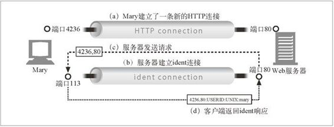

5.4 第一步——接受客户端连接
如果客户端已经打开了一条到服务器的持久连接，可以使用那条连接来发送它的请求。否则，客户端需要打开一条新的到服务器的连接（回顾第 4 章，复习一下 HTTP 的连接管理技术）。
5.4.1 处理新连接
客户端请求一条到 Web 服务器的 TCP 连接时，Web 服务器会建立连接，判断连接的另一端是哪个客户端，从 TCP 连接中将 IP 地址解析出来。1 一旦新连接建立起来并被接受，服务器就会将新连接添加到其现存 Web 服务器连接列表中，做好监视连接上数据传输的准备。
1 不同的操作系统在对 TCP 连接进行操作时会使用不同的接口和数据结构。在 Unix 环境下，TCP 连接是由一个套接字表示的，可以用 getpeername 调用从套接字中获取客户端的 IP 地址。
Web 服务器可以随意拒绝或立即关闭任意一条连接。有些 Web 服务器会因为客户端 IP 地址或主机名是未认证的，或者因为它是已知的恶意客户端而关闭连接。Web 服务器也可以使用其他识别技术。
5.4.2 客户端主机名识别
可以用“反向 DNS”对大部分 Web 服务器进行配置，以便将客户端 IP 地址转换成客户端主机名。Web 服务器可以将客户端主机名用于详细的访问控制和日志记录。但要注意的是，主机名查找可能会花费很长时间，这样会降低 Web 事务处理的速度。很多大容量 Web 服务器要么会禁止主机名解析，要么只允许对特定内容进行 解析。
可以用配置指令 HostnameLookups 启用 Apache 的主机查找功能。比如，例 5-2 中的 Apache 配置指令就只打开了 HTML 和 CGI 资源的主机名解析功能。
例 5-2 配置 Apache，为 HTML 和 CGI 资源查找主机名
HostnameLookups off
<Files ~ "\.(html|htm|cgi)$">
HostnameLookups on
</Files>
5.4.3 通过ident确定客户端用户
有些 Web 服务器还支持 IETF 的 ident 协议。服务器可以通过 ident 协议找到发起 HTTP 连接的用户名。这些信息对 Web 服务器的日志记录特别有用——流行的通用日志格式（Common Log Format）的第二个字段中就包含了每条 HTTP 请求的 ident 用户名。2
2 这个通用日志格式的 ident 字段被称为“rfc931”，这是根据定义 ident 协议的过时 RFC 版本（更新过的 ident 规范记录在 RFC1413 中）命名的。
如果客户端支持 ident 协议，就在 TCP 端口 113 上监听 ident 请求。图 5-4 说明了 ident 协议是如何工作的。在图 5-4a 中，客户端打开了一条 HTTP 连接。然后，服务器打开自己到客户端 ident 服务器端口（113）的连接，发送一条简单的请求，询问与（由客户端和服务器端口号指定的）新连接相对应的用户名，并从客户端解析出包含用户名的响应。

图 5-4 使用 ident 协议来确定 HTTP 的客户端用户名
ident 在组织内部可以很好地工作，但出于多种原因，在公共因特网上并不能很好地工作，原因包括：
很多客户端 PC 没有运行 ident 识别协议守护进程软件；
ident 协议会使 HTTP 事务处理产生严重的时延；
很多防火墙不允许 ident 流量进入；
ident 协议不安全，容易被伪造；
ident 协议也不支持虚拟 IP 地址；
暴露客户端的用户名还涉及隐私问题。
可以通过 Apache 的 IdentityCheck on 指令告知 Apache Web 服务器使用 ident 查找功能。如果没有 ident 信息可用，Apache 会用连字符（-）来填充 ident 日志字段。由于没有 ident 信息可用，在使用通用日志格式的日志文件中，第二个字段通常都 是连字符。